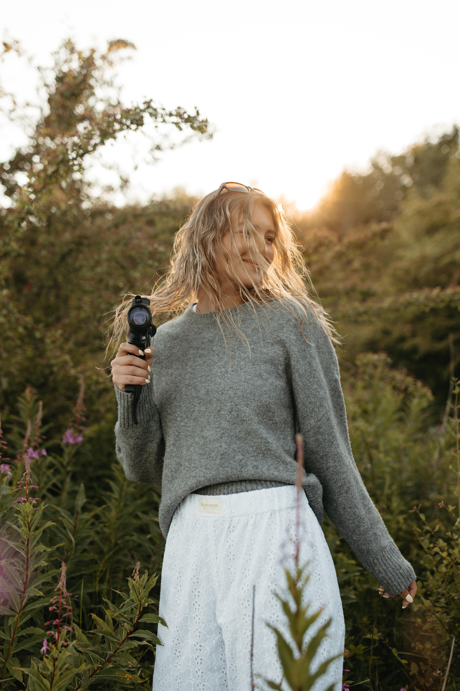

about us & our approach
Claire is a Seattle-based photographer, filmmaker, & nurse with a love for photographs that feel as good years later as they did the day they were made. Her work goes back to 2019 and is centered around 35mm film alongside Super 8, the photobooth, and digital with an appreciation for the beautifully imperfect moments that make up a wedding day. She is drawn to honest emotion, thoughtful details, movement, and the moments that happen when no one is quite paying attention.
When she's not behind the camera, Claire is usually spending time with her husband Jeffrey and their dog, Colbie, traveling, creating something, or finding an excuse to bring her camera along. She approaches every wedding with equal parts intention and instinct - creating space for things to happen naturally while offering direction when it's wanted. The result is imagery that feels nostalgic, effortless, and true to the people in it.
investment
Wedding collections begin at $6,500. Each collection is thoughtfully built around an intentional blend of digital + 35mm film, with options for Super 8, engagement sessions, and the photobooth.